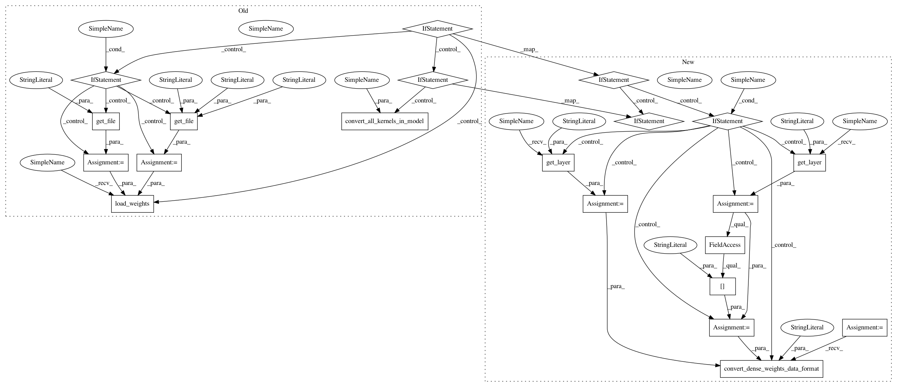

f516cc6ddefeeecec0e42e1f25deee24737af2bc,keras/applications/resnet50.py,,ResNet50,#Any#Any#Any#Any#Any#Any#,127
Before Change
// load weights
if weights == "imagenet":
if K.image_data_format() == "channels_first":
if include_top:
weights_path = get_file("resnet50_weights_th_dim_ordering_th_kernels.h5",
TH_WEIGHTS_PATH,
cache_subdir="models",
md5_hash="1c1f8f5b0c8ee28fe9d950625a230e1c")
else:
weights_path = get_file("resnet50_weights_th_dim_ordering_th_kernels_notop.h5",
TH_WEIGHTS_PATH_NO_TOP,
cache_subdir="models",
md5_hash="f64f049c92468c9affcd44b0976cdafe")
model.load_weights(weights_path)
if K.backend() == "tensorflow":
warnings.warn("You are using the TensorFlow backend, yet you "
"are using the Theano "
"image data format convention "
"(`image_data_format="channels_first"`). "
"For best performance, set "
"`image_data_format="channels_last"` in "
"your Keras config "
"at ~/.keras/keras.json.")
convert_all_kernels_in_model(model)
else:
if include_top:
weights_path = get_file("resnet50_weights_tf_dim_ordering_tf_kernels.h5",
TF_WEIGHTS_PATH,
cache_subdir="models",
md5_hash="a7b3fe01876f51b976af0dea6bc144eb")
else:
weights_path = get_file("resnet50_weights_tf_dim_ordering_tf_kernels_notop.h5",
TF_WEIGHTS_PATH_NO_TOP,
cache_subdir="models",
md5_hash="a268eb855778b3df3c7506639542a6af")
model.load_weights(weights_path)
if K.backend() == "theano":
convert_all_kernels_in_model(model)
return model
After Change
if K.backend() == "theano":
layer_utils.convert_all_kernels_in_model(model)
if K.image_data_format() == "channels_first":
if include_top:
maxpool = model.get_layer(name="avg_pool")
shape = maxpool.output_shape[1:]
dense = model.get_layer(name="fc1000")
layer_utils.convert_dense_weights_data_format(dense, shape, "channels_first")
if K.backend() == "tensorflow":
warnings.warn("You are using the TensorFlow backend, yet you "
"are using the Theano "
"image data format convention "
"(`image_data_format="channels_first"`). "
"For best performance, set "
"`image_data_format="channels_last"` in "
"your Keras config "
"at ~/.keras/keras.json.")
return model
In pattern: SUPERPATTERN
Frequency: 3
Non-data size: 21
Instances
Project Name: keras-team/keras
Commit Name: f516cc6ddefeeecec0e42e1f25deee24737af2bc
Time: 2017-02-25
Author: francois.chollet@gmail.com
File Name: keras/applications/resnet50.py
Class Name:
Method Name: ResNet50
Project Name: keras-team/keras
Commit Name: f516cc6ddefeeecec0e42e1f25deee24737af2bc
Time: 2017-02-25
Author: francois.chollet@gmail.com
File Name: keras/applications/resnet50.py
Class Name:
Method Name: ResNet50
Project Name: keras-team/keras
Commit Name: f516cc6ddefeeecec0e42e1f25deee24737af2bc
Time: 2017-02-25
Author: francois.chollet@gmail.com
File Name: keras/applications/vgg19.py
Class Name:
Method Name: VGG19
Project Name: keras-team/keras
Commit Name: f516cc6ddefeeecec0e42e1f25deee24737af2bc
Time: 2017-02-25
Author: francois.chollet@gmail.com
File Name: keras/applications/vgg16.py
Class Name:
Method Name: VGG16